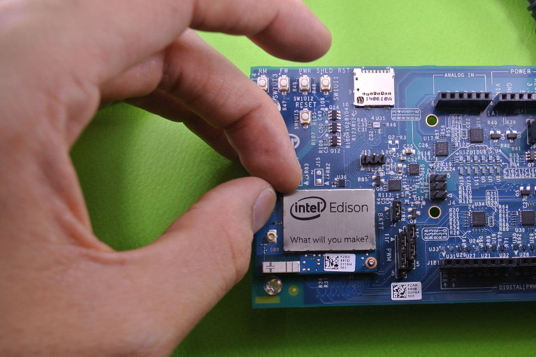
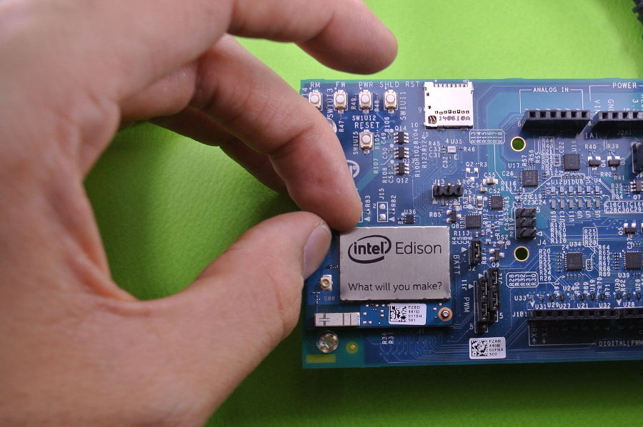

★EdisonにPython環境を構築する¶

 

{kind=link}
Edisonでは、すでにPythonが標準に入っておりますが、通常のPCと同じように非常にパワフルに動作しますので、Python関連のライブラリを強化します。
Pythonが起動することを確認する
- python
※終了するときは exit() を入力して 終了します。
pipをインストールする
pipはPythonのライブラリをインストールするためのコマンドです。
Edisonのopkgにはpipが無いため、Pythonソースを使ってインストールを行います。
インストール用のソースをダウンロードします。
- curl https://bootstrap.pypa.io/get-pip.py -o get-pip.py
ダウンロードしたソースをPythonで実行します。
- python get-pip.py
インストール完了です。試しにpipとコマンドを入力してみてください。
- pip
※もしここでエラーが出たらTwitterでご報告ください。>@nonNoise
pipを使ってPythonを強化してみる
★ Webサーバー用マイクロフレームワーク Flask
- pip install flask
★ ドキュメント作成支援ライブラリ Sphinx
- pip install sphinx
★ 画像処理用イメージライブラリー Pilliow (PIL)
- pip install pillow
★ デーモン管理用ライブラリ supervisor
- pip install supervisor
★ シリアル制御用ライブラリ PySerial
- pip install pyserial
などなどw
せっかくなので、お馴染み “Hello World!”
コマンドでpythonを入力し、エンター
- python
>>の先に以下のソースを入力してエンター
- >> print(“Hello World!”)
Hello World!
Pythonはスクリプト言語なので開発が非常にシンプルで賢いのでおすすめです。
お疲れさまでした。
後は、お好きなようにPythonで遊んでみてください。
管理情報¶
| 初版: | 2014/10/25 |
|---|---|
| 作成者: | Yuta kitagami |
| 連絡先: | kitagami@artifactnoise.com |
| twitter: | @nonNoise |